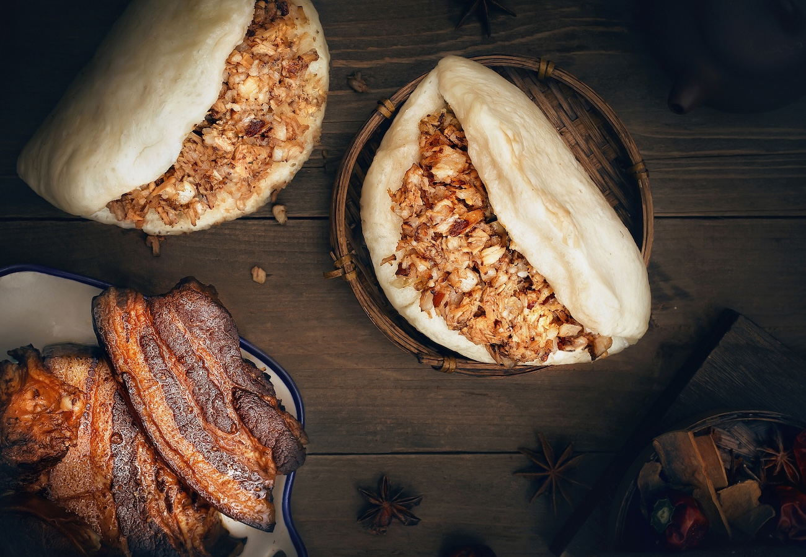
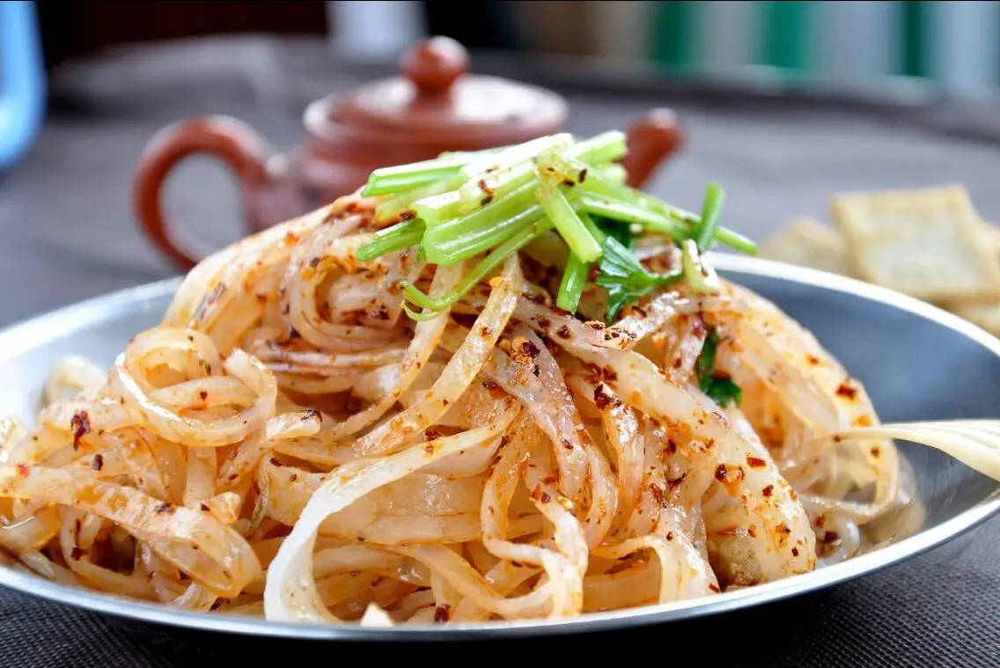

Xi'an, known as the capital of 13 dynasties, is one of China's Four Great Ancient Capitals with a rich history spanning over 3,000 years. The city is home to numerous famous historical landmarks, including the world-renowned Terracotta Army, the well-preserved ancient city wall, and iconic pagodas such as the Big and Small Wild Goose Pagodas. Beyond its historical significance, Xi'an is also celebrated for its diverse and flavorful local cuisine, particularly the vibrant street food found in the Muslim Quarter, which reflects a unique blend of Chinese and Islamic cultures. Its deep cultural heritage, ancient sites, and delicious food make Xi'an a must-visit destination for history lovers and food enthusiasts alike.
1. Terracotta Warriors Museum: Located in Lintong District of Xi'an, the Museum of the Terracotta Warriors and Horses is one of the most significant archaeological discoveries of the 20th century and is often referred to as the “Eighth Wonder of the World.” These life-sized clay soldiers, horses, and chariots were part of the mausoleum complex of Qin Shi Huang, the first emperor of China, built over 2,000 years ago. They vividly reflect the military might and artistic sophistication of the Qin Dynasty. The site was inscribed as a UNESCO World Cultural Heritage Site in 1987 and is among China's earliest National 5A Tourist Attractions.

2. Giant Wild Goose Pagoda: Located in Xi'an's Yanta District, the Giant Wild Goose Pagoda was originally built in 652 AD during the Tang Dynasty by the famous monk Xuanzang. It was constructed to house Buddhist scriptures, relics, and statues brought back from his pilgrimage to India. This seven-story brick pagoda stands as a classic example of Tang Dynasty Buddhist architecture and remains one of Xi'an's most iconic landmarks. Recognized as a National Key Cultural Heritage Site and a National 5A Tourist Attraction, the pagoda is a testament to Xi'an's historical and religious significance.

3. Tang Paradise: Situated adjacent to the Giant Wild Goose Pagoda, Tang Paradise is a large cultural theme park that recreates the splendor of the Tang Dynasty. Featuring traditional palace-style buildings, landscaped gardens, music fountains, and scenic lakes, the park offers an immersive experience into Tang-era culture. Highlights include the evening performance “Dream Back to the Tang Dynasty,” which combines dance, music, and light shows. As a National 5A Tourist Attraction, Tang Paradise blends historical aesthetics with modern entertainment, making it a popular destination for visitors of all ages.

4. The Grand Tang Mall: The Grand Tang Mall, a dazzling pedestrian street at the foot of Xi'an's Giant Wild Goose Pagoda, offers an immersive journey into China's Tang Dynasty (618-907 AD). This free-attraction masterpiece blends golden-lit Tang architecture with cutting-edge light shows, where visitors can watch viral street performances like the "Dumpling Girl" swaying in traditional Hanfu, sample Shaanxi snacks from night market stalls, and admire Silk Road-inspired art installations. Crowned as China's Top Nighttime Destination, the mall transforms at dusk into a luminous wonderland with interactive projections of Tang poetry and seasonal light festivals, while daytime visitors can explore boutique shops selling replica Tang artifacts. Easily combined with the adjacent Giant Wild Goose Pagoda, this open-air "museum" perfectly captures Xi'an's legacy as the ancient Silk Road's starting point and Tang capital.

5. Xi'an City Wall: Xi’an’s City Wall is the most well-preserved and largest ancient city wall in China. Built during the early Ming Dynasty (14th century), it stretches 13.74 kilometers in a rectangular loop around the city center. The structure includes four main gates, watchtowers, corner towers, and a surrounding moat. Its wide top allows for walking and cycling, offering panoramic views of the city and insights into ancient Chinese defense systems. It is recognized as both a National 5A Tourist Attraction and a National Key Cultural Heritage Site, and it is also included on China’s tentative list for World Cultural Heritage.

6. Huaqing Palace: Located at the foot of Mount Li in Lintong District, Huaqing Palace has served as an imperial hot spring retreat since the Zhou, Qin, Han, and Tang Dynasties. It is best known for the romantic legend of Emperor Xuanzong and his beloved concubine Yang Guifei during the Tang Dynasty. Visitors can see preserved relics such as the Lotus Pool and Star Pool bathing sites. The palace is also historically significant as the site of the 1936 Xi’an Incident, with a memorial museum on-site. Today, it is a National 5A Tourist Attraction, and the large-scale outdoor performance The Song of Everlasting Sorrow dramatizes the emperor and concubine’s love story with music, dance, and light effects.

7. Shanxi History Museum: Situated in the Xiaozhai area of Xi’an, the Shanxi History Museum is one of China's first national-level museums. It houses over 370,000 artifacts covering the region’s history from prehistoric times through the Qing Dynasty. The museum is renowned for its collections from the Zhou, Qin, Han, and Tang dynasties, including Tang sancai ceramics, bronzeware, gold and silver items, murals, and Silk Road artifacts. It serves as an essential gateway to understanding the rich historical and cultural heritage of the Guanzhong region. It is a National AAAA Tourist Attraction and a National Key Cultural Heritage Site.

8. Bell Tower & Drum Tower: The Bell Tower was built in 1384 during the Ming Dynasty and marks the geographical center of ancient Xi’an. The nearby Drum Tower was constructed in 1380 and originally served for timekeeping by beating drums at night. Both towers are striking examples of traditional Chinese wooden architecture and are beautifully lit in the evening. The area between the two towers leads to the Muslim Quarter, a vibrant food street known for its local snacks. These landmarks are National Key Cultural Heritage Sites and prominent symbols of the city.

9. Daming Palace National Heritage Park: Once the political and cultural center of the Tang Dynasty, Daming Palace was the grandest imperial complex of its time, known as the “Palace of a Thousand Palaces.” Located in today’s Xincheng District, the original palace covered 3.2 square kilometers. The site has been transformed into a national archaeological park featuring palace ruins, immersive museums, and digital exhibitions. It is a National Key Cultural Heritage Site and part of the UNESCO World Heritage Site “Silk Roads: the Routes Network of Chang'an-Tianshan Corridor.”

10. Forest of Stone Steles Museum: Established in 1087 during the Northern Song Dynasty, the Forest of Stone Steles Museum is housed in the former Confucian Temple of Xi’an. It contains over 3,000 stone steles, epitaphs, and calligraphic works ranging from the Han to the Qing dynasties. Highlights include the Kaicheng Stone Classics, Xiaojing Stele, and Yan Zhenqing’s Memorial to His Nephew, making it a paradise for calligraphy and history enthusiasts. It is the largest museum of stone inscriptions in China and a National Key Cultural Heritage Site.

Popular as a gourmet paradise, Xi'an offers cuisines from all over the world as well as the following iconic local specialties:
1. Roujiamo: Often referred to as the “Chinese hamburger,” Roujiamo is one of the oldest street foods in China, with origins dating back to the Warring States Period (475–221 BC). It consists of slow-braised pork (sometimes beef or lamb) stuffed inside a baked flatbread known as mo. The meat is tender and flavorful, and the bread is crispy on the outside and soft inside. This simple yet satisfying snack remains a staple of Shaanxi cuisine.

2. Liangpi: Liangpi, or cold skin noodles, is a classic dish from the Qin and Han Dynasties (221 BC–220 AD). Made from wheat or rice flour through a washing and steaming process, the noodles are served chilled with cucumber, bean sprouts, gluten strips, and seasoned with vinegar, garlic water, and chili oil. Its chewy texture and refreshing, tangy-spicy flavor make it a popular street food, especially in the summer.

3. Yangrou Paomo: A signature dish of Xi’an, Yangrou Paomo (lamb soup with crumbled flatbread) has roots in the Western Zhou Dynasty (1046–771 BC). It features hand-torn pieces of wheat flatbread soaked in a rich lamb broth simmered with bones, served with vermicelli, black fungus, and cilantro. The bread absorbs the broth’s flavor without becoming mushy, and the lamb is tender and aromatic. The tradition of tearing the bread by hand before cooking reflects the city's slow food culture.

4. Youpo Mian (Oil-Splashed Noodles): Originating in the Tang Dynasty (618–907 AD), Youpo Mian is a classic Shaanxi noodle dish. Wide hand-pulled noodles are topped with chili flakes, garlic, and scallions, then finished with a splash of hot oil that releases their aroma. The noodles are firm and springy, with bold yet balanced seasoning, making the dish both simple and flavorful.
.jpg)
5. Biangbiang Mian (Biang Noodles): A signature dish from Shanxi province, Biangbiang Mian is named after the distinctive "biang" character, one of the most complex in the Chinese language. These noodles are exceptionally wide and thick, often described as "belt-like." Traditionally hand-pulled, they are served with a savory topping of chili oil, garlic, vinegar, soy sauce, and vegetables such as bok choy or bean sprouts. Sometimes, stewed meat or eggs are added. Known for their chewy texture and rich, aromatic sauce, Biangbiang Mian embodies the hearty and robust flavors of northwestern Chinese cuisine.
.png)
Xi'an has a warm temperate monsoon climate, with annual temperatures averaging 12-14°C. In December, daytime highs are 2-6°C, while nighttime lows often drop to -4°C to 0°C (sometimes lower). The large temperature difference and increasing cold signal winter's arrival.
When embarking on your journey through the vibrant and bustling streets of Xi'an, there's one piece of advice that can significantly enhance your travel experience: embrace the convenience of e-payment methods. In a city where ancient traditions seamlessly blend with modern innovations, opting for electronic payments is not just a practical choice but a gateway to a smoother, more enjoyable exploration of this dynamic metropolis. Alipay is one of the many e-payment options widely used in China.
Please find the following instruction for setting up Alipay: